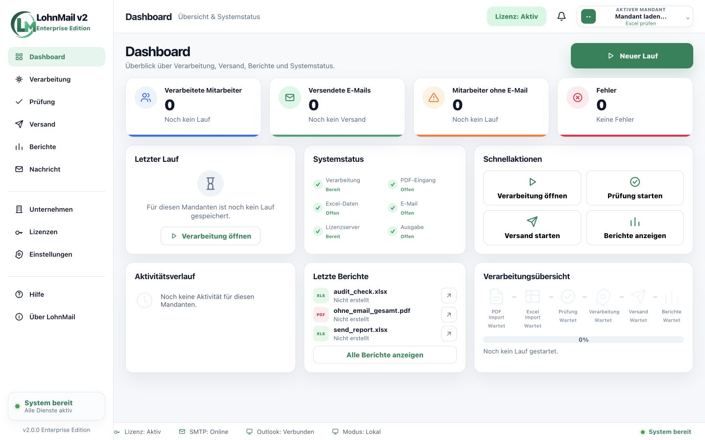

- 01ImportPDF & Excel
- 02Zuordnungautomatisch
- 03Versandkontrolliert
- 04Berichtvollständig
Digitaler Lohnabrechnungsversand
Lohnabrechnungen schneller, sicherer und papierlos versenden.
LohnMail automatisiert den Weg vom Sammel-PDF bis zum dokumentierten E-Mail-Versand – lokal, kontrolliert und für beliebig viele Unternehmen.
- 2 Monate kostenlos
- Lokale Verarbeitung
- Beliebig viele Unternehmen
GeSoB GmbHim Unternehmenseinsatz
Rund 500 Mitarbeitendeim realen Payroll-Alltag
Beliebig viele Unternehmenohne Mandantenlimit
Das Problem
Der manuelle Versand von Lohnabrechnungen kostet Zeit, Geld und Nerven.
In vielen Unternehmen werden Lohnabrechnungen noch immer gedruckt, sortiert, kuvertiert und intern verteilt. Dieser Prozess kostet jeden Monat wertvolle Zeit in der Lohnbuchhaltung, verursacht laufende Kosten und erhöht das Risiko manueller Fehler.
Besonders bei vielen Mitarbeitenden wird der klassische Prozess schnell unübersichtlich: Sammel-PDFs müssen getrennt, Personalnummern geprüft, E-Mail-Adressen gesucht und fehlende Daten manuell nachbearbeitet werden.
PDF-Dateien müssen manuell getrennt werden.
Personalnummern müssen einzeln geprüft werden.
E-Mail-Adressen müssen manuell gesucht oder abgeglichen werden.
Abrechnungen müssen korrekt zugeordnet werden.
Mitarbeitende ohne E-Mail müssen separat behandelt werden.
Fehler sind später nur schwer nachvollziehbar.
Papier, Toner und Umschläge verursachen laufende Kosten.
Der gesamte Prozess bindet wertvolle Arbeitszeit.
Die Lösung
LohnMail übernimmt den Versandprozess für Sie.
Aus Sammel-PDF und Excel-Liste wird ein klarer, kontrollierter Workflow. LohnMail liest Personalnummern, ordnet E-Mail-Adressen zu, trennt die Dokumente und bereitet den sicheren Versand vor.
Prüfübersichten, Versandstatus und Berichte zeigen jederzeit, was verarbeitet, versendet oder noch offen ist.
- 01PDF importieren
- 02Excel-Liste laden
- 03Personalnummern erkennen
- 04Dokumente trennen
- 05PDFs verschlüsseln
- 06E-Mails vorbereiten
- 07Kontrolliert versenden
- 08Bericht erstellen
Die Software
Alles im Blick, bevor Sie auf Senden klicken.
Klare Statusanzeigen statt verstreuter Listen und manueller Zwischenkontrollen.

Der Monatslauf auf einen Blick
Mitarbeitende, versendete Abrechnungen, fehlende E-Mail-Adressen und Systemstatus sind sofort sichtbar.
Sensible Daten
Sensible Lohndaten sicher und lokal verarbeiten.
Lohnabrechnungen enthalten besonders schützenswerte Informationen. Deshalb läuft LohnMail in Ihrer Arbeitsumgebung und reduziert unnötige externe Zwischenschritte.
- Lokale VerarbeitungIhre Daten bleiben in Ihrer Arbeitsumgebung.
- PDF-VerschlüsselungDokumente werden geschützt für den Versand vorbereitet.
- Prüfung vor VersandWarnungen und fehlende Adressen werden vorher sichtbar.
- Vollständige ProtokolleVerarbeitung und Versand bleiben nachvollziehbar.
Aus der Praxis
„Nicht als theoretisches Softwareprojekt entwickelt, sondern direkt aus dem Alltag der Lohnbuchhaltung heraus.“
Der Entwickler arbeitet selbst als Lohnbuchhalter und kennt Zeitdruck, sensible Daten, fehlende E-Mail-Adressen und Rückfragen aus eigener Praxis.
Für echte Monatsläufe gebaut.
LohnMail ist konsequent auf den praktischen Einsatz ausgerichtet: verständlich, lokal, übersichtlich und auf reale Arbeitsabläufe in der Lohnbuchhaltung abgestimmt.
Manuelle Kontrolle, offene Fälle und die Notwendigkeit einer sauberen Dokumentation wurden nicht nachträglich ergänzt, sondern von Anfang an mitgedacht.
Bei der GeSoB GmbH wurde LohnMail in einer Unternehmensumgebung mit rund 500 Mitarbeitenden integriert. Die Software basiert damit auf echten Anforderungen statt theoretischen Annahmen.
500Mitarbeitende im Praxiseinsatz
Payrollvom Fachanwender entwickelt
Klare Konditionen
Erst im Alltag testen. Dann entscheiden.
Zwei volle Monate, um LohnMail mit Ihren Abläufen und Ihrem Team zu prüfen.
Ein Preis. Alle Funktionen. Keine Begrenzung der Mandantenanzahl.
LohnMail Professional
40 €/ Monat
Für Unternehmen, HR-Abteilungen und Lohnbuchhaltungsteams.
Im Preis enthalten
- Unbegrenzt viele Mandanten und Unternehmen
- PDF-Import
- Excel-Abgleich
- Automatische Dokumententrennung
- Personalnummer-Erkennung
- PDF-Verschlüsselung
- E-Mail-Versand
- Prüfübersicht
- Fehlende E-Mail-Adressen verwalten
- Versandprotokolle
- Berichte und Exporte
- Lizenzverwaltung
- Lokale Verarbeitung
2 Monate kostenlos testen
Testzugang anfragen
Unverbindliche Anfrage. Wir melden uns persönlich.
Kurz beantwortet
Häufige Fragen.
Wo werden die Lohndaten verarbeitet?
LohnMail ist für den lokalen Einsatz auf dem Computer beziehungsweise in der Arbeitsumgebung Ihres Unternehmens ausgelegt.
Was passiert bei fehlenden E-Mail-Adressen?
Die betroffenen Mitarbeitenden werden vor dem Versand gesammelt ausgewiesen und können separat bearbeitet werden.
Welche Daten werden importiert?
Sie arbeiten mit einem Sammel-PDF der Lohnabrechnungen und einer Excel-Liste für Personalnummern und E-Mail-Adressen.
Für welche Unternehmensgröße eignet sich LohnMail?
LohnMail ist besonders für regelmäßige Monatsläufe mit etwa 50 bis über 1.000 Mitarbeitenden interessant.
Wie viele Unternehmen kann ich mit LohnMail verwalten?
Sie können LohnMail für beliebig viele Unternehmen und Mandanten nutzen. Die Anzahl der verwalteten Unternehmen ist nicht begrenzt.
Kostenloser Testzugang
Testen Sie LohnMail mit Ihrem nächsten Monatslauf.
Schicken Sie uns Ihre Kontaktdaten. Wir melden uns persönlich und klären, wie LohnMail zu Ihrem Ablauf passt.
support@lohn-mail.de